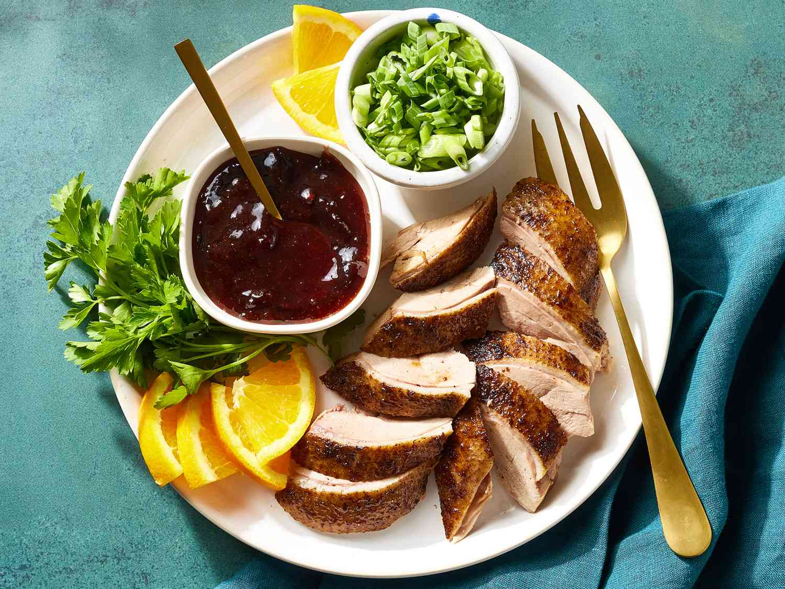
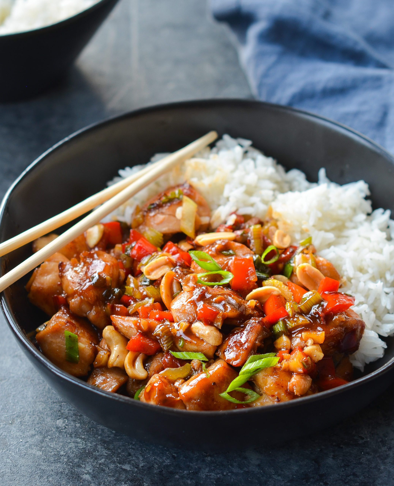

Asia Kitchen's Menu

Kimchi
A traditional side dish made from fermented
napa cabbage and various vegetables. It's spicy and tangy, often served with almost every
Korean meal, enhancing flavors and promoting health with probiotics.
92.99$

Bibimbap
A vibrant rice dish topped with sautéed
vegetables, marinated meat, and a fried egg, all mixed together with gochujang (spicy
sauce). It's a wholesome, balanced meal loved for its colorful presentation.
89.99$

Tteokbokki
Spicy stir-fried rice cakes cooked in a sweet
and spicy sauce, often accompanied by fish cakes and green onions. This popular street food
offers a chewy texture and bold flavor that is highly addictive.
93.99$

Bulgogi
Tender marinated beef that is grilled or
stir-fried, characterized by a sweet and savory flavor from the marinade. Served with rice
or lettuce wraps, it's a favorite for family gatherings and celebrations.
49.99$

Pekin Ördeği
Famous for its crispy skin and tender meat,
this iconic dish features duck roasted to perfection. Served with thin pancakes, hoisin
sauce, and cucumber, it offers a delightful mix of textures and flavors.
59.99$

Kung Pao Tavuk
A spicy stir-fried dish made with chicken,
peanuts, and vegetables in a savory sauce. This classic combines heat with crunch, creating
a satisfying and flavorful meal that is often paired with rice.
49.99$

Dumpling (Jiaozi)
These delightful parcels of dough are filled
with minced meat and vegetables. They can be steamed, boiled, or pan-fried, making them
versatile and a popular choice for gatherings and celebrations.
34.99$
Sushi
A renowned dish consisting of vinegared rice
paired with various ingredients like raw fish, vegetables, and seaweed. Its delicate flavors
and artistic presentation make it a staple in Japanese cuisine.
55.99$
Ramen
A beloved noodle soup dish, featuring chewy
noodles served in a rich broth, topped with ingredients like sliced pork, green onions, and
nori. Ramen is comfort food that varies greatly by region.
44.99$
Tempura
A light and crispy batter-fried dish,
typically made with shrimp, fish, and seasonal vegetables. Tempura offers a deliciously
crunchy texture and is often served with a dipping sauce for added flavor.
99.99$

Okonomiyaki
A savory Japanese pancake made with flour,
eggs, shredded cabbage, and various ingredients. It's cooked on a griddle and topped with a
variety of sauces, making it a popular street food.
94.99$

Mochi
A soft, chewy dessert made from glutinous
rice, often filled with sweet red bean paste or ice cream. This delightful treat is enjoyed
year-round, especially during festivals and special occasions.
74.99$